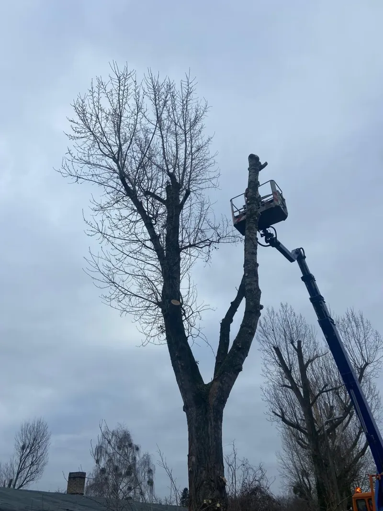
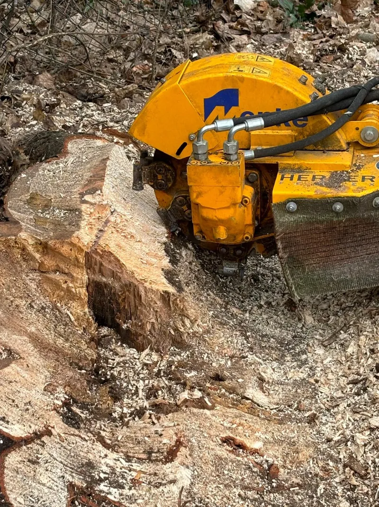

Konzept B · Wald-Monument · Prototyp, nicht final
Baum-Land-Forst · Seddiner See
Wir bieten Ihnen: Baumfällung, Baumpflege, Baumkontrolle, Winterdienst, Pflasterarbeiten, Neuanpflanzung, Grünflächenpflege und mehr.


Telefon 0172 3841620 · info@blfservice.de · Am Seehügel 1c, 14554 Seddiner See